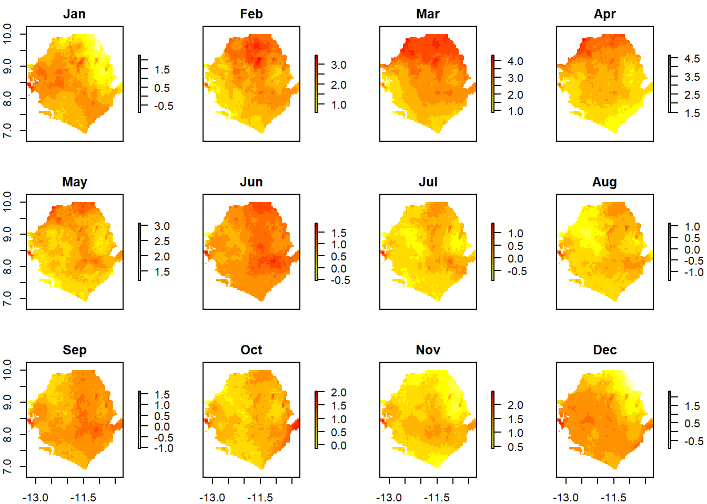
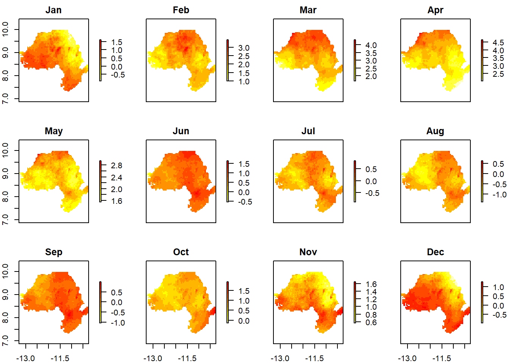
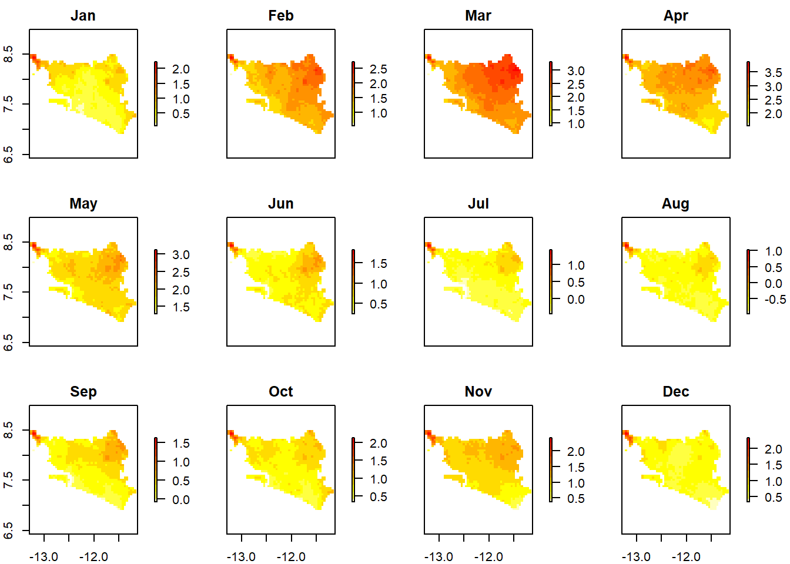
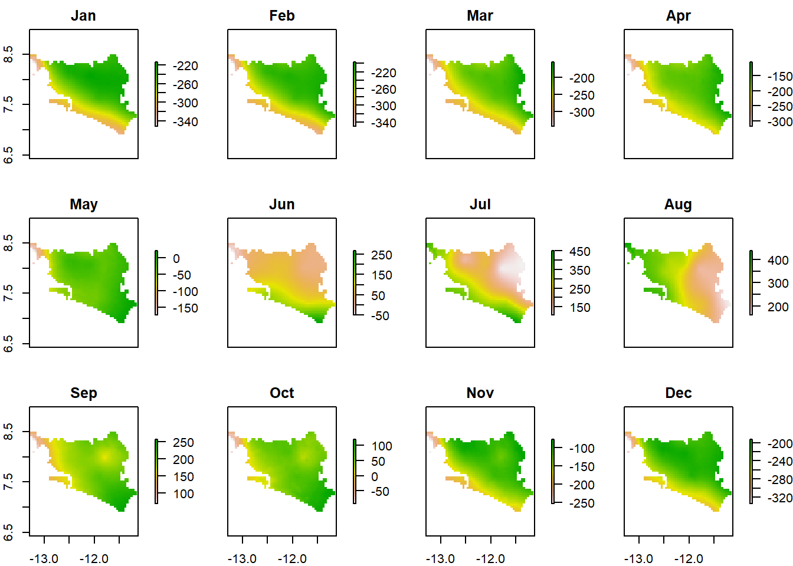
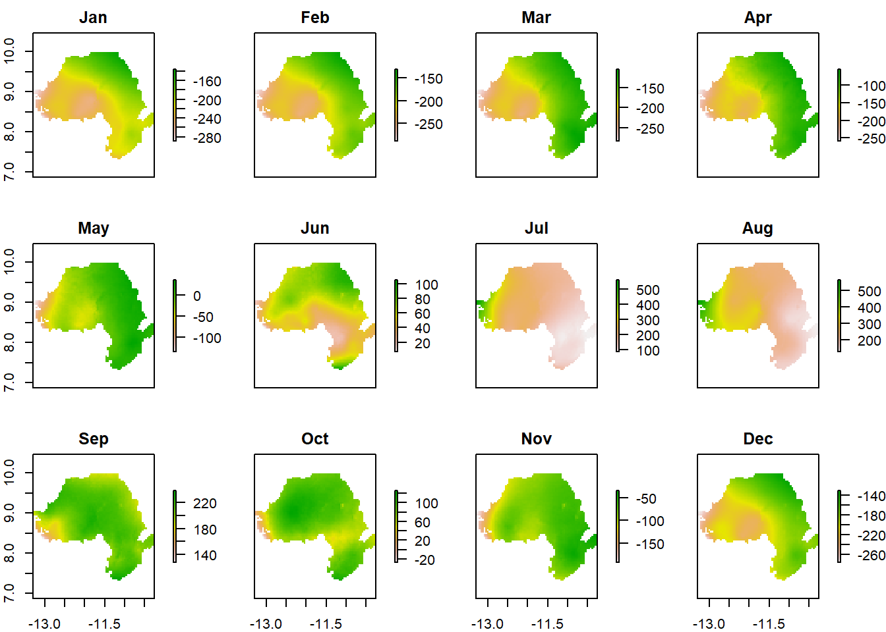
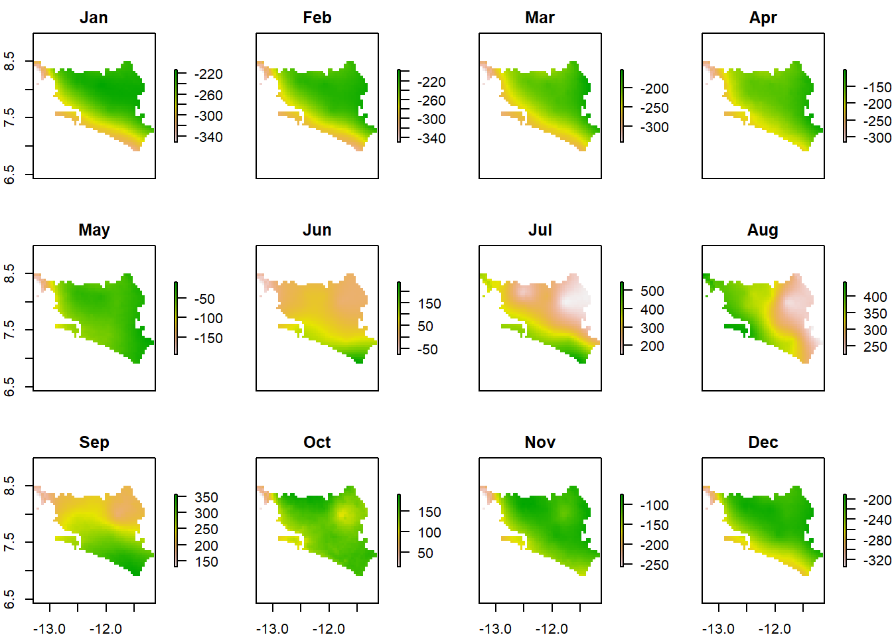
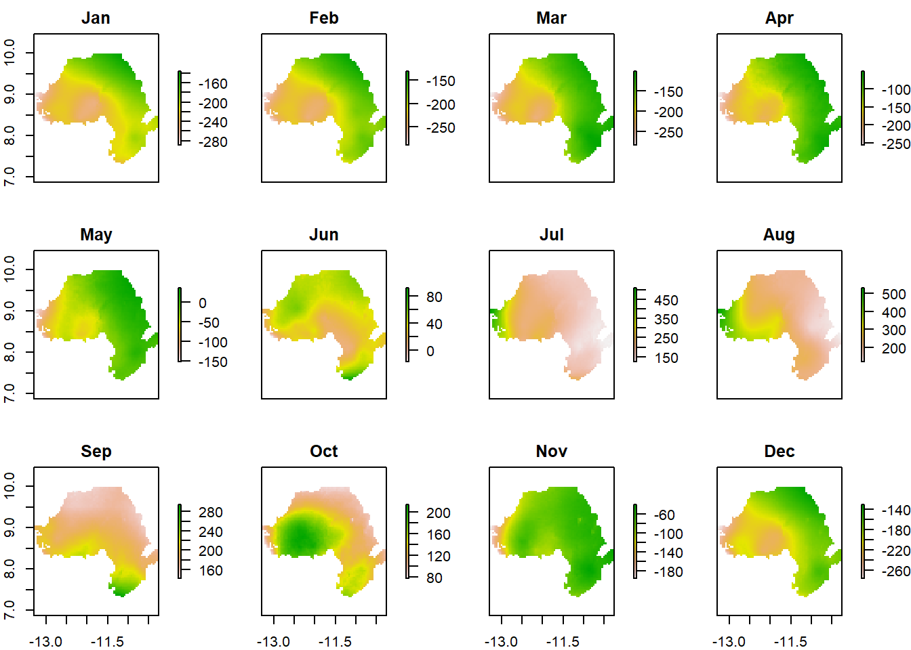
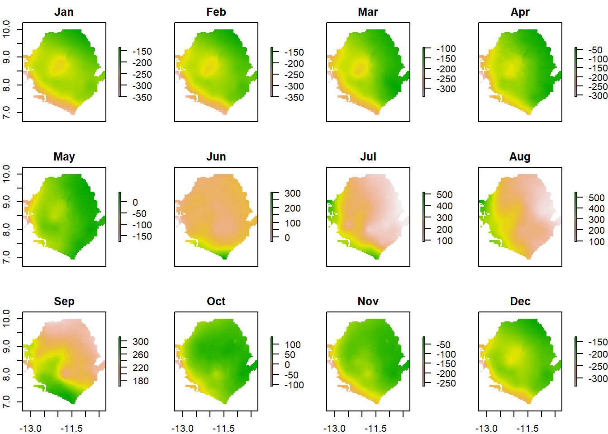
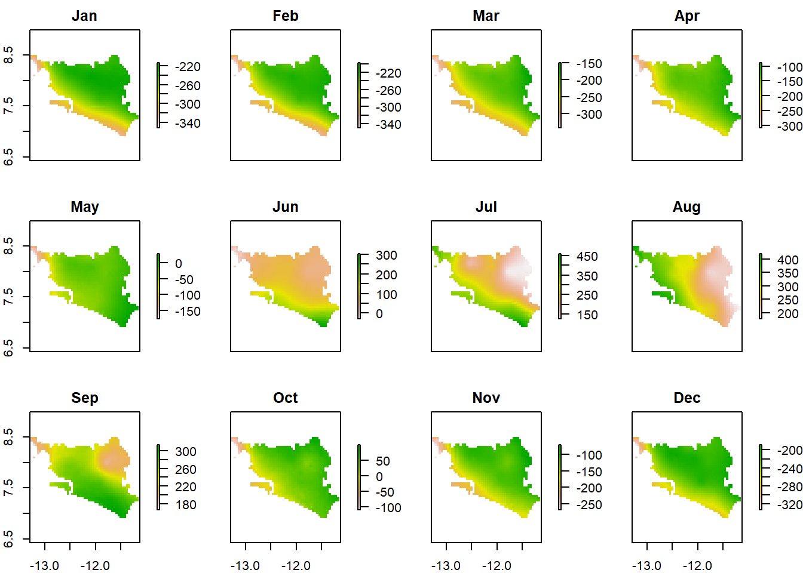
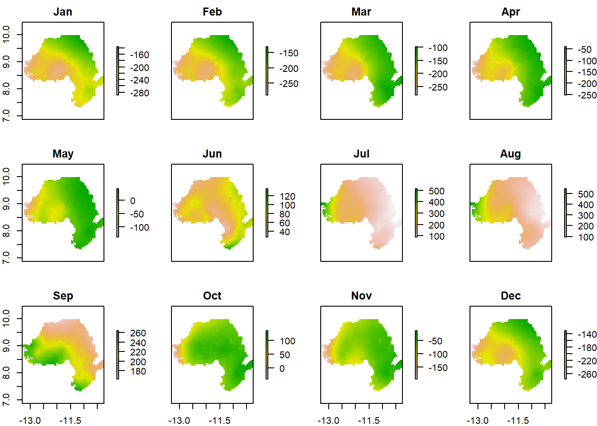

Chapter 4 Climate Impacts, Vulnerabilities and Risks
4.1 Introduction
This chapter provides the climate science basis to inform adaptation planning in Sierra Leone. The Fifth Assessment Report of the Intergovernmental Panel on Climate Change (AR5 IPPC) indicates that Sierra Leone is among the most vulnerable African countries to the increasing frequency of climate change impacts. The country has been ranked as the third most vulnerable after Bangladesh and Guinea Bissau to impacts of climate change (Government of Sierra Leone 2015a). This chapter serves a link between the physical process of climate change and the impacts in order to understand how climate change will intersect with the existing development context presented in the previous chapter.
4.2 General Climate Characteristics
Temperature
Sierra Leone is characterized as a tropical climate. The average temperature is around 27 C. There are two seasons with different temperatures and rainfall patterns. The rainy season is from May to November and the dry season is from December to May. The average temperature during the rainy season is 22–25 degrees Celsius while the dry season is warmer with temperatures reaching 25 to 27 degrees accompanied by dry, cool winds which blow in from the Sahara Desert. Humidity during the rainy season can be up to 93% and decreases inland to about 47% as the rainfall declines. There is little variation in the day length due to the country’s location near the equator. It should be noted that prior to 2005, there were no automatic weather stations for the collection of data in Sierra Leone although the standard meteorological data was collected.
Precipitation
The rainy season is largely controlled by the movement of the tropical rain belt (also called the Inter-Tropical Convergence Zone, (ITCZ), which oscillates between the northern and southern tropics over the course of a year. During this period, the average rainfall is 2746 mm. Rainfall is highest along the coast and decreases as it moves inland (Government of Sierra Leone 2018). Along the coast it can reach 3000– 5000 mm per year while at the eastern border of the county it is 2000-2500mm (Government of Sierra Leone 2018). The average monthly rainfall peaks in July and August when the average number of rainy days is 27 (Government of Sierra Leone 2018). Weather stations were vandalized during the civil conflict which has created huge gaps in the precipitation record. There have been cases of water scarcity due to the delayed onset of the monsoon rains, and when the heavy rain has arrived there has been extensive flooding (UNDP 2012).
Normal precipitation and temperature for Sierra Leone (1981 – 2010). Data from the Climatic Research Unit CRU.CY.4.04 dataset (Harris et al., 2020).
4.3 Historical observations to assess variability, trends and extremes
Temperature Mean temperature in Sierra Leone has been above normal in recent decades (figures 1a and 1b). A signal of warming in Sierra Leone’s is found in relation to base-periods 1961-1990 and 1981-2010. An overall warming of the country is more evident when anomalies are calculated using 1961-1990 as a base period, with increasing positive anomalies since the late 1980’s. On the other hand, when anomalies are calculated using the base period 1981-2010, a constant warming is observed in at least the last two decades.
Fig. 1a. Annual temperature anomalies (C) for Sierra Leone (1950 – 2019) in relation to the 1961 -1990 mean, calculated from the Climatic Research Unit CRU.CY.4.04 dataset (Harris et al., 2020).
Fig. 1b. Annual temperature anomalies (C) for Sierra Leone (1950 – 2019) in relation to the 1981 -2010 mean, calculated from the Climatic Research Unit CRU.CY.4.04 dataset (Harris et al., 2020).
Based on the European reanalysis (ERA5; C3S, 2017), using 98 ERA5 daily temperature grid points over Sierra Leone, climate change indices and sector-specific climate indices reveal the picture of how climate change has impacted temperature in recent years at the country level. Climate indices (figure 1c) have been produced with Climpact3 -a software that allows calculation of climate indices from daily precipitation and temperature data (Alexander and Herold 2015).
Overall, between 1981 and 2019 (in relation to the base-period 1981-2010), evidence is found of a decrease in the diurnal temperature range (the difference between maximum and minimum temperature is decreasing); in addition, the annual percentage of cold nights (Tx10p, days when Tn < 10th percentile) and the annual percentage of cold days (Tx10p, days when Tx < 10th percentile) present a decreasing trend for the last 40 years (figure 2, a,b,c).
On the other hand, for the same period, increasing trends are evident in the frequency of days with maximum temperature above the median (Txgt50p), as they are in the indices of warm nights (Tn90p, days when Tn > 90th percentile) and warm days (Tx90p, days when Tx > 90th percentile), (figure 2, d, e, f). These changes in temperature in Sierra Leone are found in all temperatures: the annual mean daily mean, the annual coldest daily minimum and the annual warmest daily temperature (figure 2 g, h, i). It is important to note that apart from the general trends detected, interannual variability lays in the background of the climate changes, making it imperative to develop adaptation strategies for both, positive and negative anomalies.
Fig. 2. Regional timeseries of climate indices for Sierra Leona 1981-2029 in relation to the 1981 -2010 mean. From left to right: (a) DTR (-); (b) Tn10p (-); (c) Tx10p (-); (d) Txgt50p (+); (e) Tn90p (+); (f) Tx90p (+); (g) Tmm (+); (h) Tnn (+); (i) Txx (+); where (+/-) denote (positive/negative) trends. Vazquez-Aguirre et al., 2021.
Precipitation
There has also been evidence of changes in rainfall patterns (Government of Sierra Leone 2018). Assessment of the long-term (1960 – 2003) rainfall conditions by McSweeney et al. (2010), demonstrated that the average annual rainfall overall has decreased since 1960. There are, however, year to year fluctuations. Additionally, there have been rotating periods of wetter and drier conditions. The 1960s and late 1970s were particularly wet, while the early 1970s and 1980s were very dry. In 2005 and 2006, rainfall was very low. There are also seasonal precipitation changes. From September to November, there is now calmer and dryer weather where previously the period was characterized by frequent thunder and lightning and short but heavy rainfall (Government of Sierra Leone 2018). However, year to year variations could also result in heavy precipitation events. For example, most of west tropical Africa was affected by floods due to above normal precipitation during some months of the year (WMO 2020).
Extreme Events
Sierra Leone has been experiencing strong winds, thunderstorms, landslides, heat waves, floods, and seasonal drought (Government of Sierra Leone 2018). It has also been observed that the pre-monsoon period (April-June) has stronger winds and more frequent rainstorms. Extreme weather events-induced floods accounted for 90% of people affected by disaster in Sierra Leone (Government of Sierra Leone 2018).. From 1980 to 2010, floods affected 221,204 people and killed 145 people, representing about 11% of people killed by disaster (Government of Sierra Leone 2018). The whole country is vulnerable. More specifically, the most affected areas during these last years include: Kroo Bay, Susan’s Bay, Granville Brook, Lumley area in Western Area, Port Loko and Kambia Districts, the Newton catchment area, Pujehun and Bo areas, Kenema and Moyamba Districts, and coastal beaches of the Western Area Peninsular (UNDP 2012). More recently, in August 2017 flooding and mudslides in Freetown killed more than 500 people.
Figure 3: Map of deadliest and most costly weather, water and climate related hazards for each country (Source: WMO analysis of 1970-2019 data from the Emergency Events Database of the Centre for Research on the Epidemiology of Disasters, CRED)
4.4 Climate change overview: projected changes of key climate characteristics
Temperature
Various General Circulation Models (GCMs) have been used to develop climate change scenarios for Sierra Leone. The climate models (HADCM2, UKTR, CSIRO, ECHAM and UKMOEQ) indicate a steady increase in temperature with little inter-model variance. By 2060, there is an estimated 1–2.5°C increase in average temperatures by 2060 with more rapid warming inland (USAID 2016). The models predict an increase in temperature of about 5°C by 2100 (Government of Sierra Leone 2018). Specifically, for Freetown, there is a median change of 0.61°C from 2011-2040 compared to 1981-2010 (RCP 4.5). For the time period 2011–2040 compared to 1981–2010 (RCP 4.5), the monthly mean change lies between 0.26°C and 1.3°C (SMHI 2021). For the near-term future (2011-2040), climate indicators (SMHI, 2021) derived from the ensemble mean of bias corrected models in CORDEX Africa, indicate that temperature in Sierra Leone relative to the recent past (1971 – 2000) will increase in at least 1 C (medium emissions, RCP 4.5, figure 4a) and up to 1.5 C (high emissions, RCP 8.5, figure 4b) in the near future (2011 – 2040). The northern half of the country having the highest temperature increases in both cases.

Fig. 4a. Mean temperature change (C) for Sierra Leone for 2020 – 2040 compared to reference period 1971 – 2000 for the medium emissions scenario (ssp245). BCC-CSM2-MR Model
Fig. xx Mean temperature change (C) for Western & Southern Sierra Leone for 2020 – 2040 compared to reference period 1971 – 2000 for the medium emissions scenario (ssp245). BCC-CSM2-MR Model

Fig. xx Mean temperature change (C) for Eastern & Northern Sierra Leone for 2020 – 2040 compared to reference period 1971 – 2000 for the medium emissions scenario (ssp245). BCC-CSM2-MR Model
Fig. 4b. Mean temperature change (C) for Sierra Leone for 2020 – 2040 compared to reference period 1971 – 2000 for the high emissions scenario (585). BCC-CSM2-MR Model.

Fig. 4b. Mean temperature change (C) for Western & Southern Sierra Leone for 2020 – 2040 compared to reference period 1971 – 2000 for the high emissions scenario (585). BCC-CSM2-MR Model.
Fig. 4b. Mean temperature change (C) for Eastern & Northern Sierra Leone for 2020 – 2040 compared to reference period 1971 – 2000 for the high emissions scenario (585). BCC-CSM2-MR Model.
Precipitation
According to an analysis by McSweeney et al. (2010) using various General Circulation Models, rainfall in July, August and September is projected to change by -27 to +29% by the 2090s, and -19 to +33% in October, November and December. The proportion of total annual rainfall that falls in heavy events is projected to increase. Seasonally, this varies between tendencies to decrease in January, February, March and to increases in July to December.
Precipitation projections from the ensemble mean of bias corrected models in CORDEX Africa, indicate for the near-term future (2011-2040) and the entirety of Sierra Leone, a potential increase (up to 10%) in annual total precipitation, regardless the emissions scenario (SMHI, 2021, figures 5 a,b,c, below). However, increments in annual total precipitation do not necessarily mean that more precipitation is expected to occur constantly, but in the form of exacerbated extreme weather. So, an urgent need is the implementation or enhancement of weather and climate observation networks, which will enable monitoring, prediction and assessment of extreme events, which in turn will feed climate

Fig. 5a. Precipitation (annual mean) for Sierra Leone for 2020 – 2040 compared to reference period 1971 – 2000 for the high emissions scenario (SSP585). BCC-CSM2-MR Model.

Fig. xx. Precipitation (annual mean) for Western & Southern Sierra Leone for 2020 – 2040 compared to reference period 1971 – 2000 for the low emissions scenario (SSP126). BCC-CSM2-MR Model.

Fig. xx. Precipitation (annual mean) for Northern & Eastern Sierra Leone for 2020 – 2040 compared to reference period 1971 – 2000 for the low emissions scenario (SSP126). BCC-CSM2-MR Model.
Fig. 5b. Precipitation (annual mean) for Sierra Leone for 2020 – 2040 compared to reference period 1971 – 2000 for the medium emissions scenario (SSP245). BCC-CSM2-MR Model.

Fig. xx. Precipitation (annual mean) for Western & Southern Sierra Leone for 2020 – 2040 compared to reference period 1971 – 2000 for the medium emissions scenario (SSP245). BCC-CSM2-MR Model.

Fig. xx. Precipitation (annual mean) for Northern & Eastern Sierra Leone for 2020 – 2040 compared to reference period 1971 – 2000 for the medium emissions scenario (SSP245). BCC-CSM2-MR Model.

Fig. 5c. Precipitation (annual mean) for Sierra Leone for 2020 – 2040 compared to reference period 1971 – 2000 for the high emissions scenario (SSP585). BCC-CSM2-MR Model.

Fig. xx. Precipitation (annual mean) for Western & Southern Sierra Leone for 2020 – 2040 compared to reference period 1971 – 2000 for the high emissions scenario (SSP585). BCC-CSM2-MR Model.

Fig. xx. Precipitation (annual mean) for Northern & Eastern Sierra Leone for 2020 – 2040 compared to reference period 1971 – 2000 for the high emissions scenario (SSP585). BCC-CSM2-MR Model.
Extreme Events
It is very likely that climate change will magnify natural disasters’ severity in terms of intensity and frequency in Sierra Leone. Climate variability and climate change-induced extreme weather events will continue to affect the incidence of existing socio-natural hazards in Sierra Leone. All projections indicate substantial increases in the frequency of days and nights that are considered “hot” in current climate. Annually, projections indicate that “hot” days will occur on 26‐63% of days by the 2060s, and 37‐84% of days by the 2090s (McSweeney et al. 2010). These increases in hot days and night are more rapid along the coast than inland (McSweeney et al. 2010). Additionally, the proportion of total annual rainfall that falls in heavy events is projected to increase especially from July to December. This increase, coupled with alternating periods of wet and dry years are likely to increase the occurrence of extreme weather events.
Sea level rise
The country is yet to develop a fully functional marine meteorological station which is vital for the assessment of sea level. It is generally accepted that sea level is rising, and that this rise will continue into the foreseeable future. The IPCC suggested that the rise between the present (1980‐99) and the end of this century (2090‐99) would be about 0.35m (0.21‐0.48m) for the A1B scenario and 0.26‐0.59m for the A1F1 scenario (IPCC 2007).
4.5 Sectoral current and future vulnerabilities
Sierra Leone has been identified by the United Nations as one of the forty-six Least Developed Countries (LDCs). Its economic and social development factor poses a major challenge to development and makes the country vulnerable to the impact of climate change. Efforts to improve the quality of life of its people have been hampered by extreme poverty, structural weakness in the economy, civil conflict, the Ebola disease outbreak of 2014 and the lack of capacity related to growth and development. All these are further aggravated by the negative impacts of climate change. The Notre Dame Global Adaptation Index ranked Sierra Leone 151 out of 181 countries in terms of vulnerability to climate change with high vulnerability and low readiness (ND-GAIN 2018). A World Bank study has found that the mortality from multiple, climate-induced hazards is high and getting worse as exposure is expected to increase (World Bank 2017). The coast is particularly vulnerable to climate change because of the extent of mangrove forest loss, exposure of coastal populace to the effects of sea-level rise and winds and high poverty levels (WA BiCC 2019).
This section provides current and potential climate vulnerabilities and impacts for all the priority sectors identified by the Government of Sierra Leone for the National Adaptation Plan process. Much of the information is based on the Third National Communication (2018). As part of that effort, vulnerability and adaptation assessments were undertaken for agriculture, water resources, human health and coastal zones based on climate change impacts for the years 2005 to 2035 and 2050. These, however, do not include social vulnerability and are based on limited available data. More detailed vulnerability assessments that look at interconnected risks are necessary to develop robust adaptation plans, while also expanding the assessment to include all the NAP priority sectors. This is a priority for the next stages in the NAP process. While the next section reviews existing information by sector, it is important to note that these impacts will interact with one another along with existing development stressors. Therefore, going forward it is critical to link these analyses and understand the interactions between climate and development activities.
Agriculture and Food Security
Agriculture is an important livelihood, primary food source and large component of the economy. Current climatic conditions are ideal for the production of Sierra Leone’s primary crops: rice, sugar cane, banana, coconut, citrus, cocoa, pineapple, yam and cassava. With climate modelling projections for 2050, demonstrating increased temperatures (approx. +1.30C) and reduced rainfall (approx. ‐6%), this is likely to change. For instance, rice is the staple food crop in Sierra Leone and is grown mainly by small-scale farmers under rain-fed conditions. This makes agriculture and farmers’ livelihoods especially vulnerable to changes in precipitation. This is compounded by the persistent rural poverty and farmers without insurance or the resources to invest in irrigation and other agricultural technologies. These climate impacts are also likely to increase water requirements for crops, while also increasing competition for water resources, as well as the increased incidence of pest and disease outbreaks.
Currently, the climatic variability and extremes experienced in Sierra Leone, including frequent rainstorms and the occurrence of seasonal drought, threaten agricultural production and food security. With increasing temperatures, changing precipitation patterns, and an increase in the intensity and frequency of extreme events such as droughts, could lead to food shortages, hunger and malnutrition. Water shortages could also lead to the loss of food production and the necessity to import and/or experience food shortages. These climate impacts compounded by fluctuating world commodity prices and poverty could lead to increased vulnerability, hunger and malnutrition (Government of Sierra Leone 2018). These impacts are even more pronounced for vulnerable groups such as women and the disabled, particularly in rural communities.
Water Resources and Energy
Water quality and availability are highly vulnerable to climate impacts. Major water uses include domestic (drinking, cooking, hygiene), agriculture (irrigation), industrial (beer, spirits, soft drink, cooling and waste disposal), and hydroelectric power production. Additionally, rural migration to Freetown, during and since the civil conflict has increased pressure on urban water resources. Reliable and clean access water is essential for these multiple uses and populations with implications for social vulnerability and poverty.
Shifting rainfall patterns have created water supply problems. This has led to decreasing access to water and reduced stream flow of rivers and streams. Stream flow has decreased as there has been a decrease in rainfall since the 1970s. For example, the stream flow to the Mano River fell by 30% between 1971 and 1989. This has large impacts on access to water since about 80% of the rural population receives water from surface sources, including many streams and ponds. These streams also dry up during severe droughts which are likely to become more common. There is also seasonal variation where 40% of the protected water points suffer water shortages in the dry season (USAID 2016), demonstrating that existing vulnerability is already acute.
While sources of water have decreased, consumption by industry and mining is increasing. These water uses also lead to decreases in water quality, further lowering the overall clean water available for drinking. While irrigation is the primary non-industrial use of water, fewer than 30,000 hectares of farmland is currently irrigated. A large percentage of the population has no access to clean water. This will be further exacerbated by climate change. Urban water is also vulnerable as the Guma Valley reservoir supplies 90% of the water for Freetown. It was designed for 300,000 people while over 1.5 million people live in Freetown.
Hydropower, which supplies 60-70% of energy is also impacted from climate change as precipitation levels are less predictable and therefore more difficult to manage. Given that only 20.3% of the country has electricity, climate change policy needs to consider access to energy that can be withstand future climate risks. The challenges facing the water and energy sector are aggravated by rapid population growth, climate change, deforestation, natural disasters, and uncoordinated urban planning.
Coastal Zone Management
Climate change is having impacts on coastal communities, fisheries, and coastal environments which are important ecosystems and support livelihoods including tourism. The coast is densely populated. It is home to 1,347,000 people and growing at about 2.5 per cent annually. Fishing is central to the coastal economy, providing a source of income and livelihoods for both fishers, fish processors, and fish traders. It has led to a large secondary economy of boat building, wood cutting, fish, transportation, basket weaving, selling fishing gear, and trading. It is believed that approximately 40,000 artisanal fishers and their families operate more than 12,000 fishing boats that create up to 50,000 jobs in the fisheries sector (WABiCC 2019). Decreasing river flows, rising salinity of estuaries, loss of fish and aquatic plant species and reduction in coastal sediments are likely to damage coastal economies and the food security for coastal and riverside populations. As part of the Third National Communication, local vulnerability assessments were conducted and demonstrated the gendered vulnerability evident in coastal communities. This indicates a need for adaptation measures to be targeted to women.
With sea level rise, loss of coastal ecosystems inundation from major rivers, flash floods during the rainy season and saline intrusions due to decreased low water flows in the dry season, there are increasing challenges to livelihoods. Coastal erosion is already a significant challenge in some coastal areas in Sierra Leone (such as Konakridee, Lakka, Hamilton and Plantain Island) where the coastline is shifting by about 4 to 6 meters a year (WABiCC 2019). Sea level rise has the effect of augmenting a decrease in the quality and quantity of ground water resources otherwise caused by human activities. If no action is taken, a total of 26.4km square is estimated to be lost to the sea. A World Bank analysis estimates that by 2050, sea level rise will lead to $46.8 million in building losses with 1881 buildings affected (2018).
Infrastructure
Infrastructure in Sierra Leone is vulnerable to climate impacts across the country. This is especially true as the current infrastructure is non-existent or poor due to the war and deferred maintenance. Roads are the primary mode of transport with limited or non-existent rail. River transport systems are often impassable during the rainy season. The coast, which will be impacted by sea level rise, beach erosion and coastal flooding, is densely populated and is an important economic center with ports and tourist facilities. Coastal communities such as Kroobay, Moa Wharf lack flood escape routes due to the low elevation of roads. Other roads also flood during the rainy season. This makes it difficult for farmers to transport their agricultural goods. Additionally, as future infrastructure investment occurs construction materials and design should be climate sensitive and consider heat stress and flood risk.
Water and sanitation infrastructure are sensitive to storm surge, sea level rise and flooding. Already a large percentage of the population lack access to clean water and sanitation facilities. Wastewater collection and treatment facilities are often situated at the lowest point possible as their operation often depends on gravity flow and are easily be inundated by water level rise. Therefore, climate-sensitive innovative designs of sanitation infrastructure are critical in adapting to climate change.
Health
Sierra Leone has one of the highest malnutrition and child mortality rates in the world, making the country’s population extremely vulnerable to climate shocks. Incidents of high temperature morbidity and mortality are projected to increase. Increased temperatures are also associated with increased episodes of diarrheal diseases, seafood poisoning, and increases in dangerous pollutants. As temperatures increase above 25°C, malaria infection is expected to rise. Malaria is the most common cause of illness and death in the country. Malaria-related illnesses contribute to 38% and 25% of child and all-ages mortality rates, respectively. The most vulnerable groups include children aged under 5 years and pregnant women. Waterborne diseases are also expected to increase with more frequent and intense flooding. Currently the heavy rains have increased the likelihood of the outbreak of communicable diseases. More intense dry seasons (with increased temperatures) in the north and west have been linked to reduced water quality and disease outbreaks. The last major cholera epidemic outbreak in 2012 caused 300 deaths and affected more than 20,000 people. Warmer seas contribute to toxic algae bloom and increased cases and food poisoning from consumption of shellfish and reef fish. This occurred in Freetown in July-August 2011 and August 2012. The Ebola outbreak revealed a deficient health system, including understaffed, unavailable or unaffordable health care that will be further stressed by climate change impacts (USAID 2016).
Environment
Ecosystems will be severely impacted by climate change and existing development stressors. With increased storm surges, flash floods, and high winds, these conditions will be exacerbated by pollution, landslides, coastal erosion, deforestation, biodiversity loss, and invasive species which will further stress ecosystems. Land cover is expected to change. 60% of the country will be under tropical dry forest, 24% under tropical very dry forest, and 12% cover under sub-tropical moist forest particularly in the south and east of the country.
This is the reverse of the current situation and indicates a northward shift in the vegetation i.e. from tropical rain forest to tropical dry forest. This will change the flora and fauna of these areas. The major challenges of forest management include, amongst others, poor governance, weak law enforcement, lack of coordination among sector ministries and illegal harvesting. Deforestation also increases both landslides and floods, by removing tree roots that stabilize the ground.
Disaster Management
The likelihood and intensity of extreme weather events will increase with the smallest change in temperatures. Although it is generally agreed that the incidence of severe weather will increase, there is no clear picture on the likelihood of a general increase in storm frequency (Government of Sierra Leone 2018). Sierra Leone is vulnerable to the increasing severity of droughts, floods and severe storms and their impacts on sectors such as agriculture, fisheries, as well as infrastructure and hydroelectric power production. Of the total number of people affected by disasters in Sierra Leone in the last 30 years, 90% of were affected by flooding (EM-DAT 2019). Specifically, from 2008 to 2011, floods affected 221,204 people and killed 145 people (11% of people killed by disaster). On Monday 14th August 2017 a devastating landslide occurred in Regent, Freetown, Sierra Leone. The landslide, which occurred in multiple phases, was located in an area which was already affected by severe flooding. As a direct result of the landslide and flooding, approximately 6,000 people were affected with 1,141 declared dead or missing. The total economic value of the effects of the landslide and floods is estimated at about SLL 237.37 billion (USD 31.65 million) according to the 2017 World Bank Loss and Damage Assessment Report (World Bank 2017). These impacts are the result of a combination of climate variability and unsustainable land use practices (such as building on steep slopes) (WABiCC 2017).
Urban and rural seasonal flooding, recurrent flash flooding, and coastal flooding are the most common observed, leading to seasonal flooding of agricultural fields and low-lying areas, flooding along the coast areas and flood waters overflowing into roads and into residents’ homes. More specifically, the most affected areas in the recent past during these last years include: Kroo Bay, Susan’s Bay, Granville Brook, Lumley area in Western Area, Port Loko and Kambia Districts, the Newton catchment area, Pujehun and Bo areas, Kenema and Moyamba Districts, and coastal beaches of the Western Area Peninsular (Government of Sierra Leone 2018). There are also transboundary issues as heavy rainfall in neighboring countries may cause floods in Sierra Leone due to the overflowing of three rivers: Great Scarcies and Little Scarcies rivers from Guinea and Mano from Liberia (World Bank 2017). There are also cascading impacts from flooding. Many communities in Sierra Leone, especially the rural poor, depend on streams and swamps, which dry up during severe droughts. Floods overwhelm existing systems, contaminating drinking water and creating sewerage overflows.
4.6 Vulnerability Assessments
There has not been a comprehensive national vulnerability assessment conducted in Sierra Leone. Those that exist are focused on a sector or area. Many have been produced through donor financed programs. These small-scale assessments, however, have not been collected in one place or reproduced nationally. There is no comprehensive assessment that has considered social and ecological interactions, urban and rural issues and the interactions between climate and non-climate risks. Additionally, there has not been gender-sensitive analysis of vulnerabilities and risks. There is also a need to explore how transboundary factors will influence vulnerability such as changes in transboundary rivers, remittances and commodity markets. A comprehensive series of gendered vulnerability assessments are a top priority for the next stages in the NAP process.
Sierra Leone’s Third National Communication to the UNFCCC includes very limited analysis of vulnerability on agriculture, water resources, health and coastal areas (Government of Sierra Leone 2018). The policy states, “The UNDP Adaptation Policy Framework methodology provided the overarching approach for the V&A assessments, coupled with the most appropriate existing analytical tools. Stakeholder engagement and relevant consultations were priorities for the sectoral assessments, to the extent possible under the timeframe and funding circumstances. These included various workshops in various parts of the country throughout the process to invite technical inputs on the V&A assessments and the resulting policies and measures recommended.” It is mostly based on studies carried out in other countries and there are significant gaps in the analysis. The document explicitly calls for more national and regional vulnerability assessments.
Sierra Leone Coastal Vulnerability Assessment was conducted as part of the USAID‐funded West Africa Biodiversity and Climate Change (WABiCC) project. It examined the vulnerability of fishing communities and ecosystems through household surveys, participatory rural appraisals and mangrove forest inventories. This study is unique for its socio-ecological approach and its coastal variation. An overall vulnerability index which combined community and ecological vulnerability indices demonstrated higher vulnerability in the Scarcies and Shebro regions, linked to high exposure (Scarcies) and low adaptive capacity (Shebro), while SLRE and Yawri Bay have somewhat lower overall vulnerability, despite higher sensitivity of the communities” (WABiCC 2017). An image of the social vulnerability is below.
Figure 6 Map of the proportion of households in each of the five quintiles of vulnerability, defined over the total sample of households. Source: (WABiCC 2017)
The World Bank funded a Sierra Leone Multi-City Hazard Review and Risk Assessment in September 2018 (World Bank 2018). It provides an analysis of the qualitative and quantitative natural hazards and risks for three cities: Freetown, Makeni and Bo. The coastal erosion hazard and risk assessment and the sea level rise assessment for Freetown use the IPCC global Atmosphere Ocean General Circulation Model to provide a scenario analysis for 2050. The flood and landslide assessments do not incorporate climate risks.
4.7 Vulnerability and Climate Data Opportunities, Challenges and Needs
According to the National Communications and consultations there are various climate data and vulnerability assessment opportunities, challenges and needs.
Data Collection, Availability and Research:
Current data collection for the National Communications is limited, does not include all sectors and is not compatible with current meteorological models. There is also limited downscaled information. MET is collaborating with the EPA to develop a template for collecting climatic and non-climatic data that follows international guidelines proposed by the UNFCCC, WMO and other supervisory bodies. This is an important first step.
A thorough assessment of climate services capacities that includes all climate-sensitive institutions is needed to analyze and identify training, technical and financial support.
There is limited information on local and national vulnerability, impacts and risks. Comprehensive vulnerability and risk assessments need to be conducted for all sectors and regions and made accessible. These should be gender sensitive and incorporate youth and people with disabilities. The data collection process and subsequent assessments should be used as opportunities for policy and community learning.
Strengthening of the climate database of all institutions in the country, provide up to date computer facilities and train experts in the input and storage of climate related data. For example, Sierra Leone has not implemented yet the WMO Integrated Global Observing System (WIGOS) and WMO Information System (WIS) which respectively provides a framework for WMO observing systems and connects all National Meteorological and Hydrological Services and regions together for data exchange, management and processing (WMO 2019).
Retrieval of data lost during the civil war since only a small portion has been retrieved thus far (WMO 2019). Some of this data is in Niger and the UK and needs to be collected and integrated into the current systems for analysis.
Intensification of research on climate change in Sierra Leone. Collaboration with national and international institutions that are in the field of research in climate change.
Currently there is no access to reliable information for effective climate risk management. The lack of a climate information communication system enhances the country’s vulnerability. Without appropriate information and climate risk management tools, policies will lack the right navigation to govern climate risks in all sectors.
There is limited dissemination of available forecasts, and forecasts are not packaged in a format that is accessible to end-users such as district planners or policy makers.
Consistent data availability for hydrological data. For instance, Sierra Leone does not possess a quality management framework for hydrology which is based on reliable hydrological data and information as key inputs to the management of water resources (WMO 2019).
Equipment and Technical Needs:
Procurement and installation of meteorological stations for the collection and monitoring of all categories of data (including aviation, agricultural, marine, and climatological data). For example, there is a need for approximately 200 agricultural stations. There are currently 8 weather stations and more are needed so that each of the 16 districts has a weather station. This will improve the ability to monitor the micro-climates within Sierra Leone and to understand climate change and its possible impacts in Sierra Leone. An increase in the amount of weather stations would also aid with provision of agricultural data so that there is better understanding of the climatic conditions. Finally, an increase in the number of automatic weather stations would also assist in providing data for ground truthing radar systems.
Providing automatic recording equipment and instruments for continuous recording of meteorological, hydrological and climatological elements and phenomena.
There is a need for procuring forecasting models and software.
Institutional and Human Capacity Needs:
SLMet has varying levels of capacity for different types of data. It has significant capacity in aviation but less capacity in hydromet, marine met, and agromet. This needs to be remedied.
The Environment Protection Agency has a Climate Change Secretariat that coordinate the development of the various convention reports, the Agency has capacity to conduct environmental monitoring, but lack the capacity to conduct a strong vulnerability assessment, adaptation modeling and adaptation planning. This needs to be strengthened.
Inadequate staff and poor facilities for weather forecasting and related activities have undermined the ability of the Meteorological Agency to provide adequate support information to all sectors and stakeholders so that they can better adapt to the impacts of climate change. For instance, there is not enough staff to collect data from the manual stations and there needs to be training for people to work at the new stations as they are built.
Capacity building and training for technical and non-technical staff in the Meteorological Agency, National Water Resources Management Agency (NWRMA) and Disaster Management Agency should be addressed in order to meet the present and future challenges including on data collection, management and decision-making on climate change, natural hazards and hydrology.
National Water Resources Management Agency (NWRMA) needs capacity and technical support to revive the National Hydrological System.
There is also a need to train people to repair and maintain stations rather than relying on only international experts.
Strengthen and capacitate Statistics Sierra Leone so that it can respond to the data and information needs of the country through a coordinated and concerted approach with the various stakeholders.
In the short term, there needs to be more experts trained in Meteorology. Currently, this training must occur internationally as there are no WMO accredited institutions in the country. In the longer term, there needs to be an accredited university program established in the country including a research program on environmental modeling.
Address gaps in technical skills for generation information on climate change (for example: downscaled or long-term forecasts are non-existent and/or not utilized).
Facilitate collaboration with national, regional and international agencies.
Data and information are fragmented across the various sectors, and it is often difficult to ascertain their credibility and relevance.
There are plans to tailor weather messages for the agricultural sectors next year. There still needs to be improved access to data for all stakeholders including local councils to inform decision-making and tailored access to information for other sectors.
Currently, understanding of forecasts is poor as is the dissemination of information. Stakeholder and community training to interpret forecasts.
To integrate local knowledge into forecasting and understanding of climate impacts, Chiefdom and District Surveillance Groups could be formed. This would create a network of local observers and monitors that can work together to document and share observations on climate trends, impacts, and consequences using a blend of local knowledge and scientific methodologies and tools.